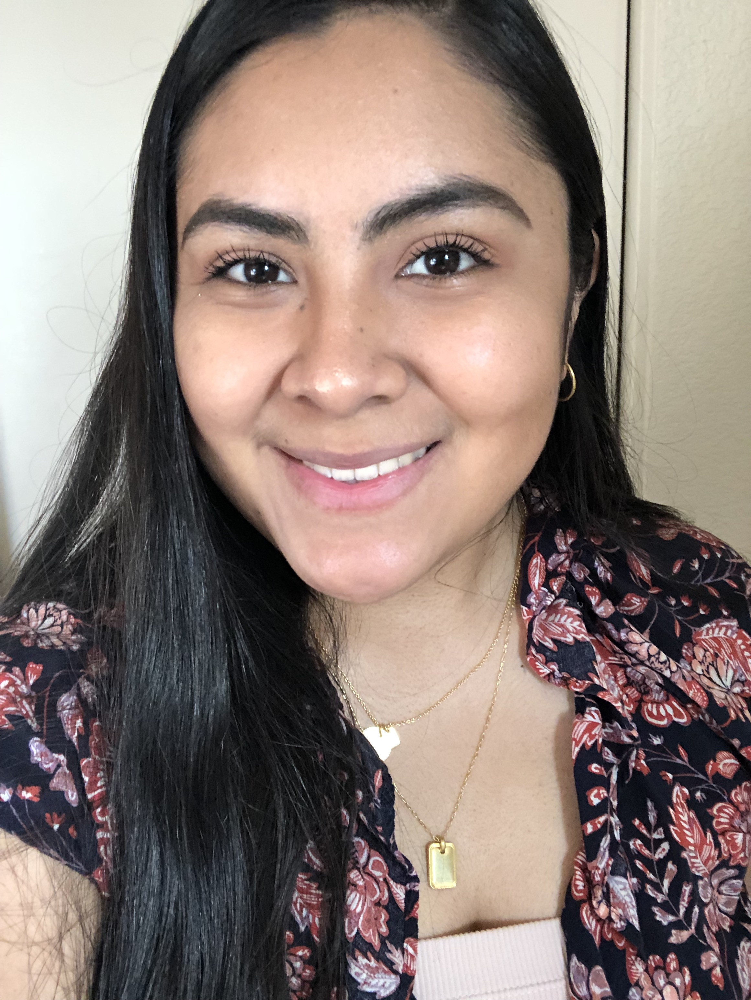

Nicol Hernandez
Major: Public Health | Class Year: Senior
Hi! I'm Nicol. I enjoy going on walks, watching movies and eating spicy food.
My favorite seasons are winter and spring but love pumpkin spice season.
If you were to ask me for a food recommendation for mexican food in SF,
I would say La Taqueria without a doubt!
Places to eat in Berkeley
- Toss
- Tender Greens
- Mezzo's

netflix
- Something I learned is to be an analyzer instead of simply a user.
This implies thinking about the intent of a certain application and reasons behind features.
- My favorite part of the article was the breakdown of twitter.
It was interesting to read that there is clear intention behind bolding of numbers and the choice of words.
- Quote I found compelling: "be curious about everything you see and think through the choices that had to be made for this product."
- Score: 8